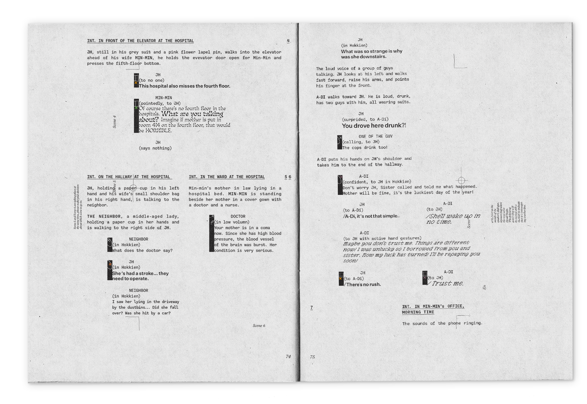
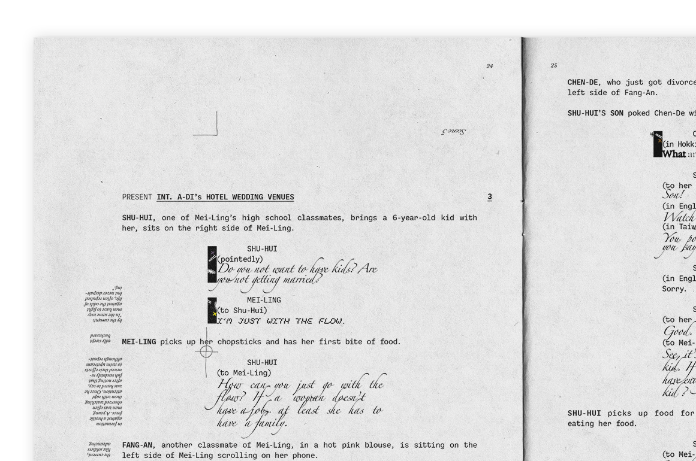

Phantom Scripting
MFA Thesis Show, December 2022.
Book Design, Script Editing.
RISO Print, Laser Print, Perfect Binding.
The script that utilizes the same symbolic visual language as the space is offered to the audiences. It provides movement instruction for audiences to interact with the scenes. For instance, theatrical stage marks on the gallery floor indicate where an actor on the stage would be positioned, and their movement through space. The same marking system is also adapted and placed beside the dialog in the script. The audiences are challenged to puzzle the system in the space and the relationship between the script and the stage. Meanwhile, the actor becomes an invisible phantom, relying on viewers in the gallery to maintain their imaginary existence.

 